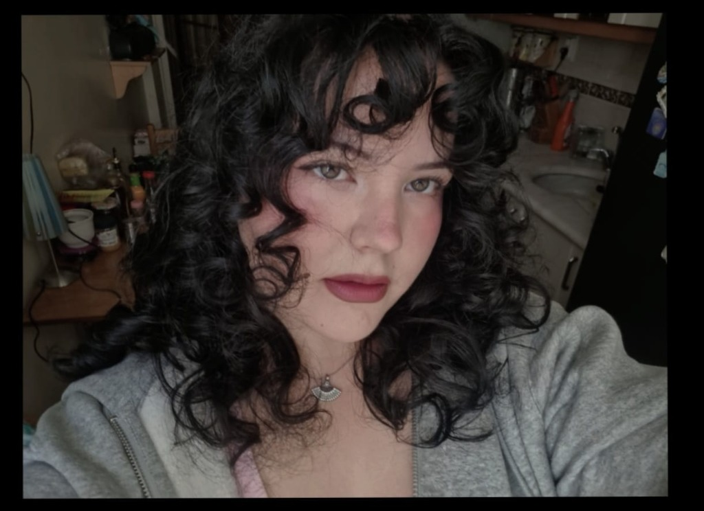

Merhaba, Ben Hazal Sıla Yılmaz
Hacettepe Üniversitesi Geomatik Mühendisliği son sınıf öğrencisiyim. Eğitim hayatım boyunca edindiğim teorik bilgileri saha uygulamalarıyla birleştirerek mesleki bilgi ve deneyimimi geliştirmeye odaklanıyorum.
Tapu ve Kadastro Müdürlüğü ile Vera Harita bünyesinde gerçekleştirdiğim stajlar sayesinde tapu ve kadastro işlemleri, haritacılık uygulamaları ve sektördeki iş süreçleri hakkında deneyim kazanma fırsatı buldum. Netcad, QGIS, ArcGIS, GNSS/GPS, total station ve 3ds Max gibi araç ve teknolojilerle ilgili bilgi ve becerilerimi geliştiriyorum. Özellikle coğrafi bilgi sistemleri, ölçme teknikleri, harita üretimi ve üç boyutlu modelleme alanlarına ilgi duyuyorum.

Hazal Sıla Yılmaz
Hacettepe Üniversitesi • Mühendislik Fakültesi
Yüzme Tutkusu ve Koy Haritacılığı
En büyük ilgi alanım yüzmek. Türkiye'nin masmavi sularında bazılarında bizzat yüzme şansı bulduğum, bazılarına ise bir gün mutlaka gitmeyi hayal ettiğim gizli koyları bir araya getirerek mesleki bilgi birikimimle dijital bir kıyı haritasına dönüştürdüm.
Yüzme ve Doğa Keşfi
Deniz ve yüzmek benim için sadece bir spor değil, doğayla bağ kurmanın en güçlü yolu. Özellikle kalabalıktan uzak, bakir ve kristal berraklığındaki sularda yüzmek en büyük heyecanım.
Kişisel Tutku & Yaşam TarzıKoyların Coğrafi Analizi
Bir koyun el değmemiş kalmasının ardındaki en temel sebep topoğrafik izolasyondur. Bu projede koyları karayolu, 4x4 dağ yolları, sarp patikalar ve yalnızca denizden tekne ulaşımı olmak üzere ulaşım zorluklarına göre modelledim.
Mekansal Modelleme & CBSHayal Edilen Rotalar
Kaş'ın Akvaryum Koyu'ndan Sinop Hamsilos Fiyordu'na, Datça'nın Kurubük'ünden Cide'nin Gideros Koyu'na kadar yüzdüğüm ve rotama eklediğim koyların hikayesini bu Web GIS sayfasında yaşatıyorum.
Kıyı Rotaları KataloğuStaj Deneyimleri
Teorik geomatik mühendisliği eğitimini sahada ve kurumsal iş süreçlerinde pekiştirdiğim stajlarım:
Tapu ve Kadastro Müdürlüğü
Tapu ve kadastro işlemleri, mülkiyet sınırlarının tespiti, pafta kontrolleri ve TAKBİS (Tapu ve Kadastro Bilgi Sistemi) süreçleri hakkında kurumsal deneyim kazandım. Resmi tescil ve arşiv süreçlerini yerinde gözlemledim.
Vera Harita
Halihazır harita üretimi, sahada GNSS/GPS ve Total Station ile nirengi ve detay ölçümleri, aplikasyon işlemleri ve Netcad üzerinde sayısal harita çizimi ve projelendirme süreçlerinde aktif görev aldım.